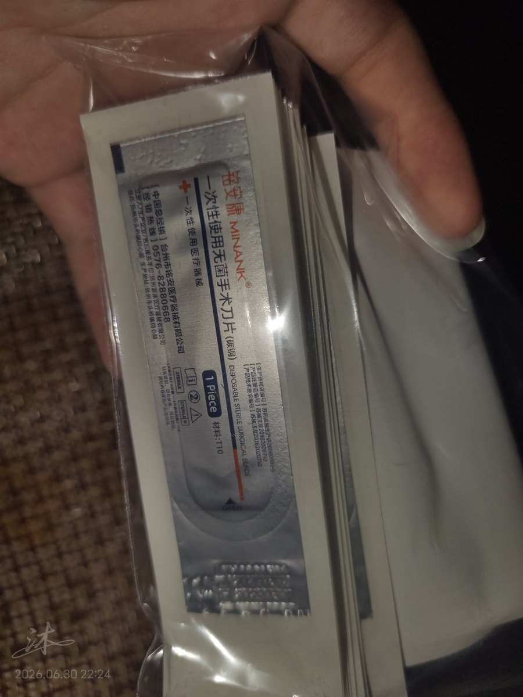

misaki
@misaki102113
@yvanyvandecw 割手的话我只推荐这个和红贝印，如果你xp是流血的话红贝印好一些，自带流血buff（）如果单纯想靠疼痛冷静一下的话11号刀片更好，伤口更窄更好愈合，同时一次性设计也更卫生🥺

沐媛yyyyy🍥🏳️⚧️🔪
@yvanyvandecw
刀片已到手，但是是我妈拿的😱她问我买刀片做什么，我说切纸用的……手术刀比美工刀便宜😋11号刀片比美工刀利吗？ https://t.co/sF5l5nI8Wy